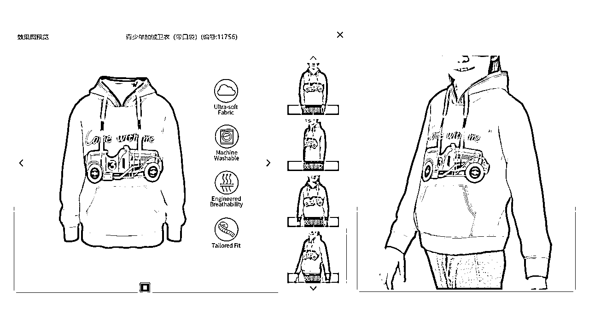
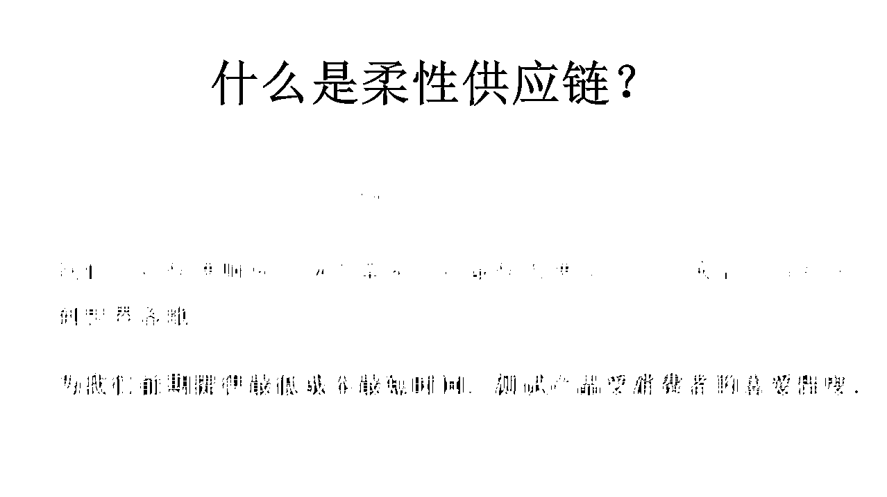
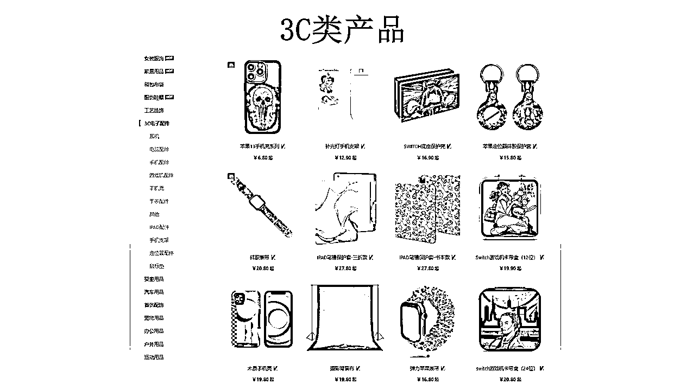
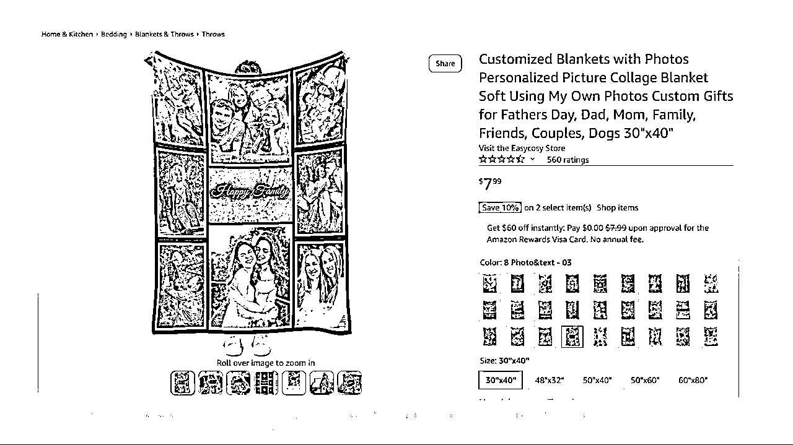

来源：https://l05pf6vefd.feishu.cn/docx/VdTwdsCVKoI6uExhTibcTMcqnD6
嗨嗨~ 生财有术的友友们大家好，我是甜八，自主创业，主要在做亚马逊的DIY定制小精品模式和来图定制模式。今天想和大家分享我在做的亚马逊DIY&POD定制模式。希望给正处在亚马逊赛道里迷茫的朋友们，多一条参考。
我是在2019年从深圳回到莆田开始接触定制模式，跟朋友合伙做第一个小组，最困难的是根本找不到老师，大量和身边朋友聊天了解，经过前辈们的指点，拼拼凑凑，经历一年的摸索，在2020年正式开始做亚马逊DIY定制模式，之后整理出一套属于自己的DIY定制化的运营模式。我们经历两年的时间从一直亏损到我2021年尾离开公司前盈利七位数，并且持续在盈利。
这两年我们经历了整个平台的大洗礼，每逢佳节必扫店，我所知道的周围人，做的非常大的也收摊转行，还在苦苦支撑的，也是怨声载道。我想目前大家对平台最大的焦虑就是店铺的不确定性，亚马逊时不时就大开杀戒，我们根本措手不及。面临这样的情况，我们势必不敢再大资本投入，快进快出对于我们来说应该是相对健康保险的方式。
由此和大家分享我比较熟悉的模式有标品精铺的模式、DIY定制化精铺模式、DIY定制小精品模式、来图定制模式。
先说说什么是DIY定制化？
FOR U DESIGNS US:
https://www.amazon.com/sp?_encoding=UTF8&asin=&isAmazonFulfilled=1&isCBA=&marketplaceID=ATVPDKIKX0DER&orderID=&seller=A21IY3YSMRUOK4&tab=&vasStoreID=
LIZIMANDU:
https://www.amazon.com/sp?ie=UTF8&seller=A3H2XUB77BXCMA&isAmazonFulfilled=1wall26:
https://www.amazon.com/sp?ie=UTF8&seller=A1ZGY3RE5LH1AU
ALAZA:
https://www.amazon.com/s?k=ALAZA&crid=1WZR2TK2ONOAU&sprefix=alaza%2Caps%2C450&ref=nb_sb_noss_1
感兴趣可以打开这些优质卖家的网页参考看看，会来些感觉
首先我解释一下什么是亚马逊DIY定制化模式：我们选择客户有可能喜欢的、带有热门主题的、带有节日特点的图片/文字内容 印刷在 各种空白的产品上 生产好 打包贴标发货入仓 卖给客户。和标品区别在于，我们可以设计各种各种不同的图案在产品上，和标品相比更加多样化，有图案差异。相对应的，就可以延伸出更多的sku。
目前市场竞争激烈，被卷的很痛苦，大家在标品上追求的差异化难度越来越大，成本也愈加高，那么刚需品+个性化图案，或许是一个突破口。
模式分析
标品精铺的模式，这边的优势在于：每个产品的库存不需要压太多，选品的成功率+效率提高了好多倍，可快速复制，团队规模可以很快扩大。劣势在于：需要的资金盘较大，起始投入较高，后勤要求高，对整体库存把控严格，对团队的组织架构要求高，不适合小麦小团队操作，会把自己累坏的。
DIY定制化精铺模式，这边的优势在于：通过堆人来批量上架和图片采集，从而提高出单效率。劣势在于：很多在做定制精铺的卖家还停在平台的图片采集，这项是非常危险，一定会给自己埋雷的方式。近两年在知识产权方面的打击是极严格的，以前投诉侵权只是链接下架，现在店铺只要有一个绩效问题店铺就会停用。甚至去做DMCA都来不及。
这个政策也给很多专门恶搞别人的人提供漏洞，很多被恶意投诉的卖家真的很惨。不是自己作图，要吃的苦头真的有很多，不如不做的，门槛很低，效益很低，别人跟卖也简单。这虽然不是在做侵权但形式上也没有区别，就是每年都要重新从头开始创业。并且在现在，这种铺货定制FBM的模式，在美国站点出单效率较差，欧洲站可以尝试。
DIY定制小精品模式，我们的做法是从一开始就是全部自己设计和创作图片，这样能尽量避免恶意投诉，后期也能为品牌化布局。简单来再说就是以精细化的运营方式来做这种柔性定制的模式，优势在于：属于比较小众的模式，竞争对手相对于整个亚马逊大环境来说 较少，前期通过柔性平台快速测试，设计成品图，小批量多次下单，最迟3-4天出货，橫向拓展产品线，更多更快触达客户。
能够大大提高我们的资金利用率，后期链接稳定之后可以通过供应链提高利润。劣势应该就是在于：和标品一样，现在也需要较长的时间沉淀和积累评价，需要更多的sku，团队需要有较高的设计水平，需要对审美和市场的热度洞察力高，快速响应。

做DIY定制化的优势有哪些？ 为什么做？
以下是借用平台的设计器生成的产品图做展示，当你想要设计一款产品，不需要去工厂打样，不需要等。在平台上就可以直接设计看到实物图，提前看看我们设计的图片，在产品上的成品效果，也能够即时修改。
包括这些图片可以直接用作亚马逊平台上的主副图A+素材，我们通常会把图片下载出来，让我们的美工进行二次处理。（可以避免恶意投诉，咱主打一个 不给坏蛋留一点机会。）至少在前期测款阶段，我们完全可以用这种方式，是不是无形之中又省了一大笔作图费用。

如果看到这里有小伙伴感兴趣，可以上平台看看，说不定有意外惊喜，前期完全可以蹭用，设计和导出图片等全是免费的，不管是非标还是标品，如果你的产品有在平台上，都可以进行设计，这个平台就是我们的一个免费工具了。
配合柔性供应链 小批量发货测试 让市场快速反应 ----- 提高资金利用率
在轻库存低成本下快速测款

我们可以看到市面上已经有非常多的平台，他们几乎能涵盖整个平台的类目，后期有能力完全可以自己开款。


以图定品 无限多 无止境
通过图片来定义产品，我们可以看到同样是向日葵主题的产品，它的展现形态有多种多样，相对应的我们可以在这样一个主题下，创作出非常多的图片，设计到产品上就变成了多个不同款式的sku，以这样的方式，我们可以无限地做创作，无止境地迭代，拥有无穷可能。
在我们认知以内的这些主题，不单单是图片，还有文字，都是可以由点及面演变成千上万的主题图案，这不刺激吗
定制的产品有市场吗？说实话我一开始真的很迷茫，为什么同样一个产品带了图片可以卖12.99-16.99，基础款黑白灰却只能卖9.99.可能这就和我们看到的奢侈品一样，很多大牌的基础款价位和定制款、限量款的价位完全不一样的档位, 那些死贵死贵的限量款都没有人买了么？它们同样被抢的精光，甚至全球调货。
想和别人在价格上有能力竞争，我们就需要有更高阶的图案设计能力和赋予价值意义的讲故事能力。
开始时走的一些弯路
一开始我想到的是用之前铺货的数据来直接发仓，现在我相信还有很多人是以这样的思维在一开始打开定制模式。我想说的是，我测试过效果并不好，甚至很多情况是把铺货的数据发了很多FBA，刚开始可能会有一些订单，后期的数据会变得非常差，很难持续或者上涨，这样就拥有了一堆卖不出去的库存。
第二个弯路就是，我想以最快的方式出效果，必然是调研平台上最热销的图片直接上架销售。当时的知识产权还不盛行，并没有图片版权保护，在2020年就开始陆陆续续不断被投诉，我们也有几个店铺被投诉，当时还不会因为侵权挂店，现在如果还出现这样的情况，店铺几乎是必死的，所以大家千万不要有这样投机取巧的想法 会死的很惨，你会发现比去特意做侵权主题还要冤大头，每年都需要重新开始创业，没有任何沉淀。
第三个弯路就是，在推广过程中，我试图用精品爆款的广告推广方式来强推定制款产品，我发现在这类非标品上花再多的钱，没有精准的刀刃，根本就是往水里丢石子，噗通两下就会沉进湖底。给再多的预算和一点点的预算，他们的效益几乎是一样的。
橫向拓展产品线
我们可以看到，上文我讲到以图定品，可以无限拓展，我们只要在图片上持续保持更新，同样的空白产品，可以做出花儿来，不再像标品一样，需要开款开模，不断更新膜具和技术。提高新品效率的同时省去等待打样的时间。
纵向增长团队规模---店铺三角锥模型布局
泛铺店
第一轮筛选—平台已有热门主题,筛选同主题图案, 二次设计, 转FBA进行一轮的测试
注意：多次排查是否有侵权风险
精铺店
在泛铺的产品中选择出单情况较好的产品进行二次排查图案是否侵权, 进行二次设计
(排查：平台上是否已经有卖家在使用这张图片, 观察卖家的店铺情况, 是一个产品 少单一的新买家还是丰富的产品线并且在其他产品上再次运用同一张图片)
品牌店
设计师级图案, 完全精细合规化品牌旗舰店运营, DIY定制小精品
打造闭环 特色定制专营店—客户订阅并且定期更新购买新款的店铺（可持续发展的团队模型初步建立）
如果是选择做定制化这个模式，我的建议就是多管齐下，做好人员规划和产品布局。
外国人热爱庆祝，几乎每个月都有节日，包括很多球赛和周年纪念日，特别是一些庆典和活动，这些都是我们运用热门元素定制化的绝佳场景！
常青款细水长流做沉淀，配合节日和季节款阶段性爆发，FBM来图做后盾。如果我们抓住这些流量，一年就只有旺季。
最后想和大家分享亚马逊上的定制功能（注意：以上说到的DIY-FBA定制化模式和接下来要分享的亚马逊来图定制是不同的两个模式）——来图定制模式是真正的低运营门槛，低试错成本，低启动资金的模式。不用囤货，不用压资金的自发货模式。
非常适合不想在亚马逊上继续大投入，又舍不得舍弃现有基础的卖家朋友，可以作为转型的一个缓冲。假设我们现在是新手小白想要快速入场，或者是想要副业兼职的宝妈等，有焦虑或者迷茫的亚马逊老鸟，都可以考虑有来图定制这个模式，一样是可以做亚马逊的。
最初2017年有做过一个店铺，并没有放心上，后面留意到经常有客户几十几百单地下，一个订单下来的利润可以顶一整天的利润，2020年疫情居家，自己拿个店铺做着玩，解封之后恢复上班，我就没再做了，店铺的订单稳定在30-50单左右，广告费全部都降低，把店铺放在美工手里管理，美工不会运营，只负责处理订单。平时每个月的利润大概在5w左右，10-12月份每月利润大概在10w左右，用我们合伙人的话来说，这个来图定制的店铺，在当时几乎养着我们整组的员工。
让我真正重视起来是店铺一年之后，我设置的划线价格全都失效了，美工并不知道，以为是自己把价格调高了结果订单好像降了一些，也没和我们说起这个事儿。有天我们的合伙人哇哇叫跑出来说，这个店铺最近是不是被恶搞，为什么利润都是百分之三百以上啊，经过排查，我们才知道是划线价格失效了，现在的售价是我标虚高的市场价。后知后觉，原来，来图定制的买家，人家根本不在意价格啊！！！
接下来和大家分享来图定制是怎么做的：
在试错成本不充足或者时间和精力、资源没法匹配的情况下，真的会举步维艰，又特别辛苦，现在有ChatGPT/Midjourney这样的工具，真的超级好应用，包括某宝万能的搜索引擎。很多事情在前期都是可以外包的，包括由平台设计导出产品主副图（要做修改）下单生产，这是一个非常好从0起步的FBM自发货来图定制模式，能做什么我们就先做什么，维持住生计，再去考虑更具有创造性的内容。
这个模式在前两年有在深圳做过一段时间的分享，我们知道任何一个赛道，知道的人越来越多，就一定会越来越卷。在前两年我们的利润一般是在100%-200%、300%甚至更多，现在部分产品卷的厉害的已经被压缩到60%-80%左右了（未核算广告费的情况）所以我建议感兴趣就要抓紧开干咯~
说说来图定制的部分优势，为什么可以做来图定制：
1 不需要备货发货到FBA仓库
不需要我们备货入仓，写好Listing文案，设计好可供客户上传图片，和预览自己效果图的模版，开通自定义，链接就完成了。
2 相对市场竞争小
亚马逊前台custom+xxx 的搜索量目前较低，除去本来就是红海竞争的产品，比如手机壳等，他们的搜索量是10000以上，其它几乎都是在几千到几百的体量。
3 利润比FBA更高 平均 1:1
由于它的独创性，和个人专属定制的特性，价格完全是卖家市场，我们赋予这个产品多少价值，愿者上钩。包括小包物流运费，正常情况下，可以达到百分百以上的利润比，还有很多买家会选择加急配送，我们一般会设置50美金左右，同样有很多这样的订单。
4 不会侵权
不会因为客户发来侵权的图案判定我们侵权，除非海关会扣下的那种，非常大牌类的侵权图案，不然很难有侵权的这个情况。有一个重点是我们千万不要为了引流故意在详情页面上带有热度的侵权的图片想要吸引客户，虽然会很有流量但是会挂店，咱还是老老实实的
5 不会被跟卖
我们从未遇到跟卖，目前还是没有被跟卖的可能，在之前我们尝试过，后台是不支持这样的listing被跟卖的。但随着平台的深入，在前期各个步骤都非常繁琐和不便利。21年以来，系统更新了非常多内容，为我们节省很多时间和耐心，后期还会有哪些更新我们还未知。
6 对listing要求不高
我们可以看到，在平台上很多listing都是非常简单的，可能连美工和运营都不需要，稍微会一点PS技能就可以自己搞定上链接。如果是像我这样上升处女座的人来说，我们或许可以和别人更不一样，甚至做的更加优质！
7 推广难度低
懂得抓取精准关键词，了解广告的基本逻辑，如果是经济型卖家，咱们就在关键词和调研超越竞争对手上多花心思，尽可能做到精细的广告布局，如果是咱们家里有矿的同学，那单纯怼一个自动广告，几乎可以搞定！
8 可以赋予无限多的意义
针对不同产品不同节日不同人群，做到自我定义和创造意义，我常给团队的人说，我们给客户呈现什么，就可以引导客户顺着我们的思路，来向我们定制什么。这个是在我们做过了非常多次的实验后，更加确信，并且觉得是个超级好主意！如果您看到这里不妨可以试试。
以下是简略的图文分享：
想要做好来图定制只要做好这几点：
1.后台开通定制功能
2.确定想要做的产品
3.调研竞争对手
4.整理出优质竞争对手
5.优质listing反查关键词，整理出关键词表
6.根据竞争对手的listing，草拟出模版和格式
7.根据以上的全面调研，写出自己的listing，做好主副图，a+等文案内容，上架。
8.基于前面的全面调研，细化广告计划，开广告
9.等待出单，增加新产品
10.处理订单

想要提高来图定制的转化，也需要像创作的图片一样，为他们找到精准的客户群体，为他们创造需求。
通过不同的定制形式对应不同的产品，来提高产品竞争力，给客户带来更多的趣味性，提高产品溢价。

不管是DIY定制小精品模式还是来图定制都是可以走长期主义路线的，前提是一开始就走在正道上，才会真正获得沉淀，复制和放大营收。相对于爆款等其它的运营模式会比较简单一些，模式偏小众一些，很多思路是自己摸索的，如果有不同的思路方式，期待能获得更好的交流，我知道有很多人是不知道有这样的模式，或者有人在做，但是找不到方法和交流的圈子，如果有幸能帮阅读者提供一点点思路，我也会很开心！